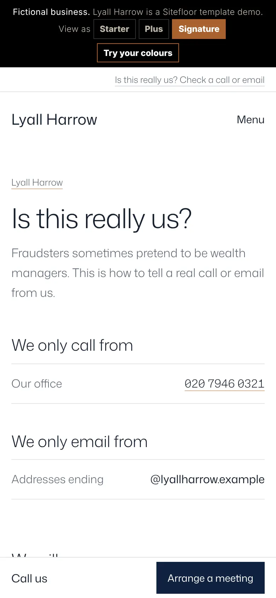
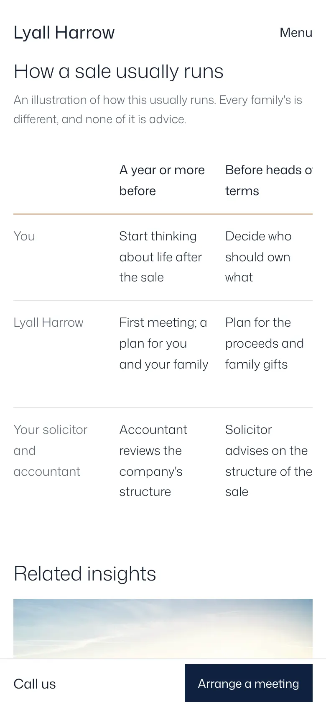
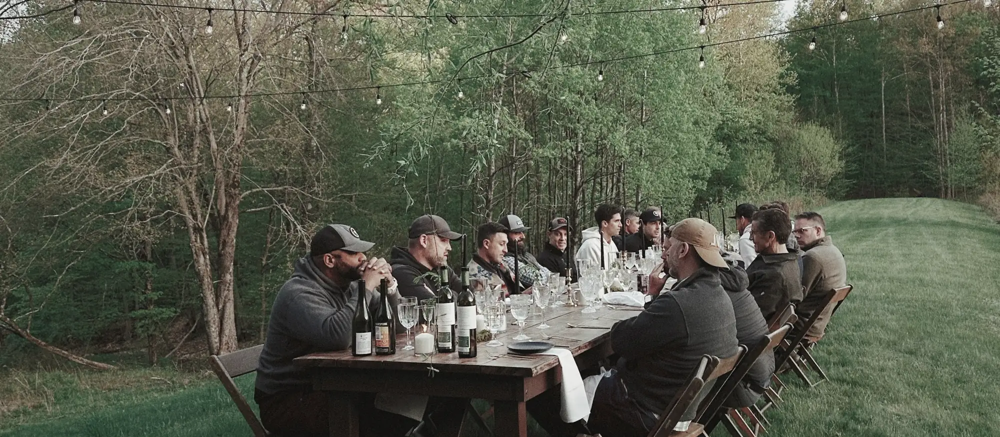
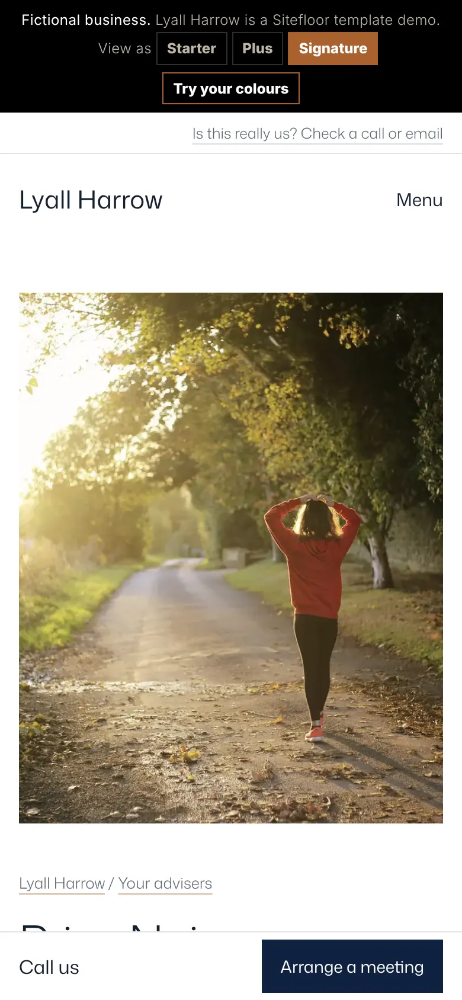
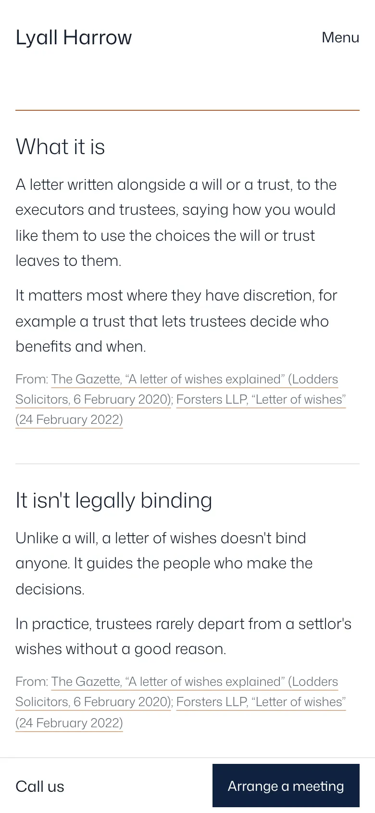

Lyall Harrow · private wealth managementA Sitefloor case study
Wealth is managed in decades. So is this website.
The founder reads it this week. Her children read it when they sell the business. Her grandchildren find it when the will is read. Lyall Harrow's site is built for each of them, and stays inside the FCA's rules on every page.
Today2026
Trust, before anything else.
Before a client says what they have, they need to know they're talking to the real firm, that it's regulated, and that nobody will ask for an account number by email.
Is this really us?Every plan
The only numbers and addresses the firm calls and emails from, what it will never ask for, and how to call back on a number you trust. Linked quietly from the top of every page.
The FCA lineEvery plan
The firm reference number, a link to check it on the register and "your capital is at risk", under the headline and in every footer. Regulatory information sets out what the FCA doesn't regulate, how to complain and the Financial Ombudsman's time limits.
Arrange a meetingPlus
The request opens in the client's own email or WhatsApp, already written. It refuses account, card and sort-code numbers before anything is sent.

The year ahead2027
Published by the firm. Approved by compliance.
Insights and events come from the firm's own Google Sheet. A row reaches the site only once compliance ticks it, names themselves and dates it. Anything that promises a return is held back. Edit the sheet below.
| Title | Summary | Approved | Approved by |
|---|
General information, not advice. When you invest, your capital is at risk.
InsightsPlus
Three on the home page, the rest on their own page, filtered by subject, each opening to the full note with its author and the date it was approved.
EventsPlus
Seminars and next-generation evenings from a second sheet, with the same tick. Each has a reply link and a calendar file in the right time zone; an evening drops off the page the day after it happens.
Ten years2036
The moments a family calls.
Selling a business, an inheritance, a move to Britain, retiring, giving. Each has its own page: what the firm does, what to have ready, and who leads it.

A page for each momentSignature
The firm's five, each with a photograph, what the firm does, what to have ready, the timeline and the insights that belong to it. The home page's "I am …" opens the right one.
What to gatherSignature
Pick a moment and get exactly the papers to find before a first meeting: tick them off, print the list or copy it. The site refuses any amount or percentage in it.
A generation2051
Read by people who weren't there.
One day the person reading is a son meeting his late mother's adviser for the first time. The site tells him who that is, what a letter of wishes is, and how the family fits together.



Each adviser's pagePlus
A photograph, the moments they look after, their reference on the FCA register with the link to check it, a direct line, and "Book time with …", which opens the meeting request with them already chosen.
A letter of wishesPlus
What it is, why it isn't binding, what people put in it and where it's kept. General information for England and Wales, every section sourced and dated.
The family mapSignature
Who is who across three generations, and the family's solicitor and accountant, drawn on the visitor's own device. Nothing is sent anywhere; it prints for the first meeting.
Fifty years2076
What looks after itself.
- Nothing unapproved reaches the page. A row without its tick, its approver or its date waits in the sheet.
- No promises, anywhere. "Guaranteed", "outperform", "inflation-beating" and their cousins are refused in every setting, from the About page to the WhatsApp message.
- Last month's seminar disappears by itself. Past events drop off; the next one rises to the top.
- The office answers in its own time. Each office shows the time there now and whether it's open.
Three horizons.
Each plan runs on a 12-month minimum, then a month's notice. Any single feature can be added to a smaller plan, and extra pages come one at a time.
Today
Starter£99 + £25 a month
- The home page and Plan your visit
- The "I am … and I live in …" first question
- How we help, with the firm's minimum
- Advisers with their register references
- The office band with its time now
- The FCA line, Regulatory information, Is this really us?
This decade
Plus£199 + £30 a month
- Up to five pages
- Insights and events from the firm's sheet, approved by compliance
- Each adviser's page, with booking
- How we work and fees
- Arrange a meeting and What to bring
- The letter-of-wishes guide
Generations
Signature£349 + £35 a month
- Up to twenty pages
- A page for each moment, with its timeline
- What to gather, per moment, to tick and print
- The family map, kept on the device
- Discreet offices, at home and abroad
- Everything in Plus
Light, and quick.
Measured on Lyall Harrow's home page with Lighthouse on a mobile setting.
- Performance
- 99Accessibility 100, best practices 100
- The shore on screen
- 1.8 sLargest paint; first paint 1.4 s
- Layout shift on a phone
- 0Nothing moves while the page loads
- All the site's code
- 23 KBScripts and styles, compressed
Your firm, a generation from now.
Send us your FCA number and a photograph you love, and we'll make a free mockup of your home page in your own words.